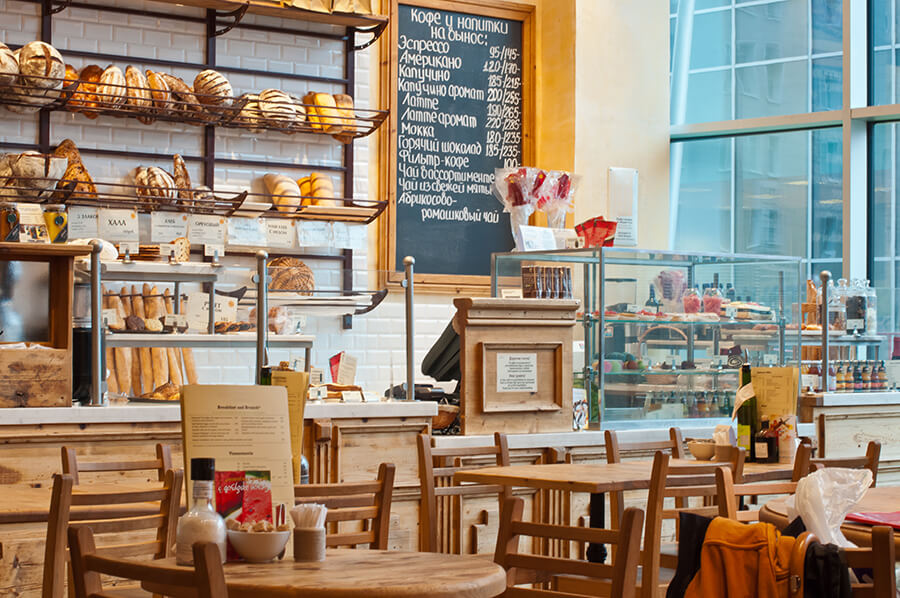

Lau Pat Sat
Lau Pa Sat — where history, heritage architecture, and delectable local food blends seamlessly in a must-visit food and retail destination for both locals and visitors. As one of Singapore’s largest hawker centers spanning over 52,000 square feet and housing more than 80 hawkers and tenants, visitors are invited to revel in the elegant old-world charm of Singapore’s 'Best Looking' Food Hall.
Tiong Bahru Bakery

Tiong Bahru Bakery offers artisanal pastries and freshly baked goods crafted with premium ingredients, blending French baking traditions with a modern twist. Renowned for its buttery croissants and vibrant café atmosphere, it’s a must-visit for any food lover.
Hill Street Tai Hwa Pork Noodle
.jpg)
Hill Street Tai Hwa Pork Noodle is a Michelin-starred hawker stall in Singapore, famous for its perfectly cooked noodles topped with tender pork slices, liver, and a rich, tangy vinegar-based sauce. This iconic spot offers an authentic taste of Singapore's culinary heritage, attracting both locals and tourists alike.